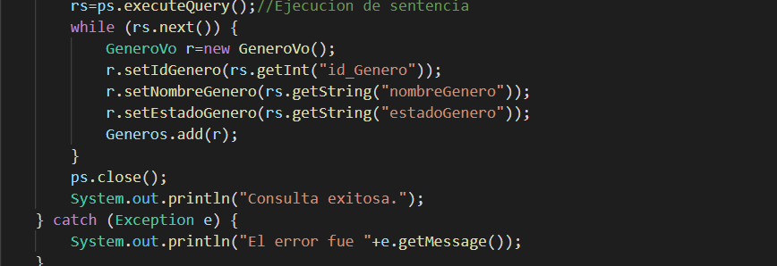

Los computadores son buenos para hacer tareas rutinarias. Idealmente, cualquier problema tedioso y repetitivo debería ser resuelto por un computador, y los seres humanos sólo deberíamos encargarnos de los problemas realmente interesantes: los que requieren creatividad, pensamiento crítico y subjetividad.
Así es como la programación no es tanto sobre computadores, sino sobre resolver problemas de manera estructurada. El objeto de estudio de la programación no son los programas, sino los algoritmos.
Una receta de cocina es un algoritmo; si bien podríamos cuestionar que algunos pasos son ambiguos (¿cuánto es «una pizca de sal»? ¿qué significa «agregar a gusto»?), en general las instrucciones están lo suficientemente bien definidas para que uno las pueda seguir sin problemas.
La entrada de una receta son los ingredientes y algunos datos como: ¿para cuántas personas se cocinará? El proceso es la serie de pasos para manipular los ingredientes. La salida es el plato terminado.
El método para multiplicar números a mano que aprendimos en el colegio es un algoritmo. Dado cualquier par de números enteros, si seguimos paso a paso el procedimiento siempre obtendremos el producto:
La entrada del algoritmo de multiplicación son los dos factores. El proceso es la secuencia de pasos en que los dígitos van siendo multiplicados las reservas van siendo sumadas, y los productos intermedios son finalmente sumados. La salida del algoritmo es el producto obtenido.
Al final del semestre, usted tendrá la capacidad de identificar problemas que pueden ser resueltos por el computador, y de diseñar y escribir programas sencillos. Además, entenderá qué es lo que ocurre dentro del computador los programas que usted usa.
Los computadores son inútiles.